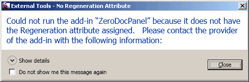

External Application Attributes
Arnošt Löbel added a comment on the little zero document external application that I presented last week, pointing out that the transaction attribute (e.g. TransactionMode.Manual) is only applicable to external commands, not applications. As he says, it should be treated as an add-in declaration error, but since it is harmless, it is quietly ignored. (It could be treated as an error in the future though.)
The question is also how the regeneration attribute is handled. It was originally intended for both commands and applications, but sometime in the future it will not be needed for either.
Currently it is required, however, and you will get an error if you remove it.
To ensure absolute clarity on this issue, I tested removing both of the attributes.
That causes no warning or error messages during compilation, obviously, since Visual Studio does not care what attributes we set on the classes we define. The application cannot be loaded, however:

So the regeneration attribute really is required, and the transaction one is not.
This error message is maybe bit confusing, since it states 'Could not run', which does not really make sense for an external application. In theory, it should probably say 'Could not load' instead.
I updated the code and the zip file provided in the original post to remove the extraneous transaction attribute.
DevTV Template Update
I mentioned how easy it is to update the DevTV Visual Studio Wizard Revit add-in templates.
So I updated my personalised C# version, which previously still generated the extraneous transaction attribute on the external application. That is actually the reason why it was included in the original application that Arnošt commented on, since I used my version of the DevTV template to create it...
Here is the new updated version, TemplateRevitArchAddinCsJt4.zip.